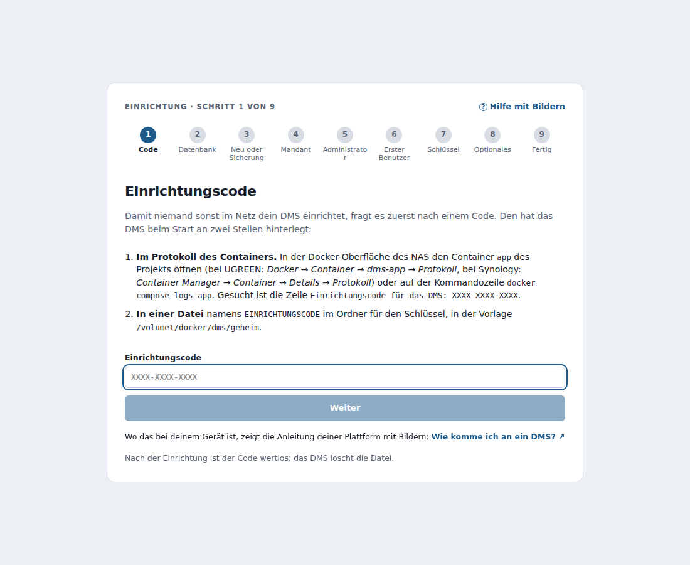
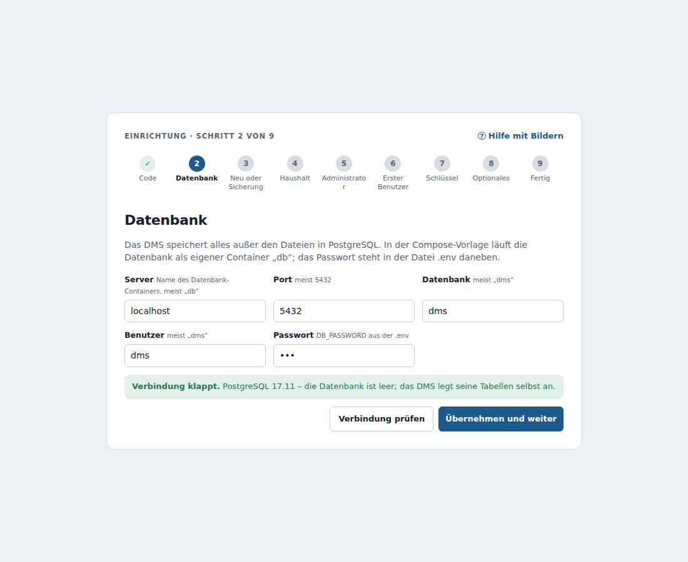
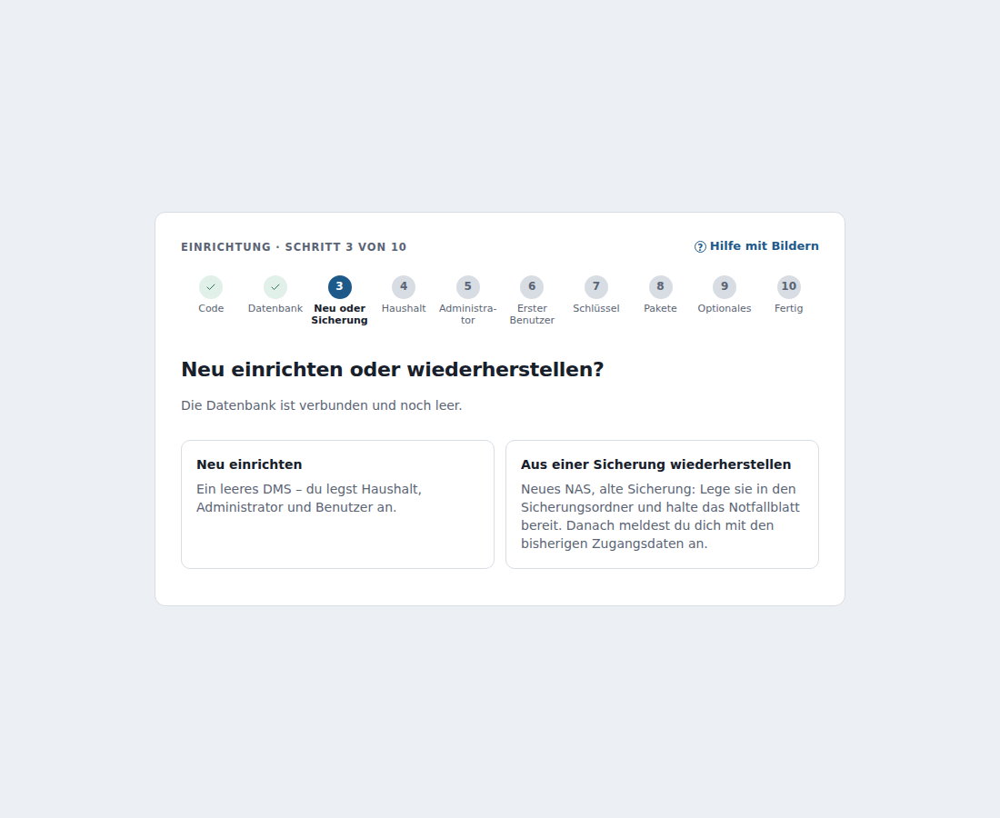
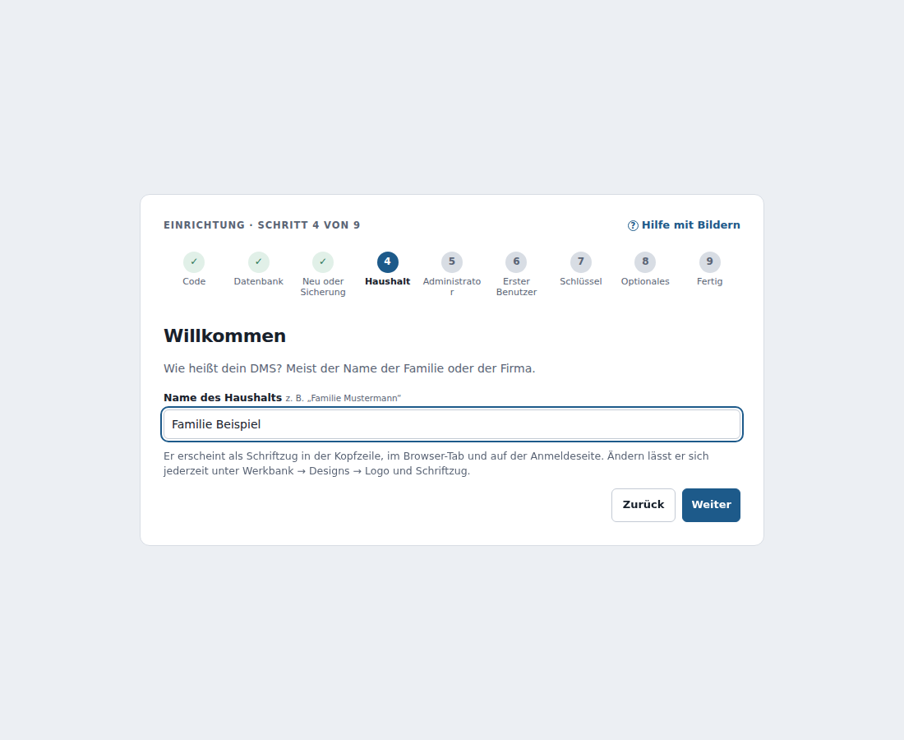
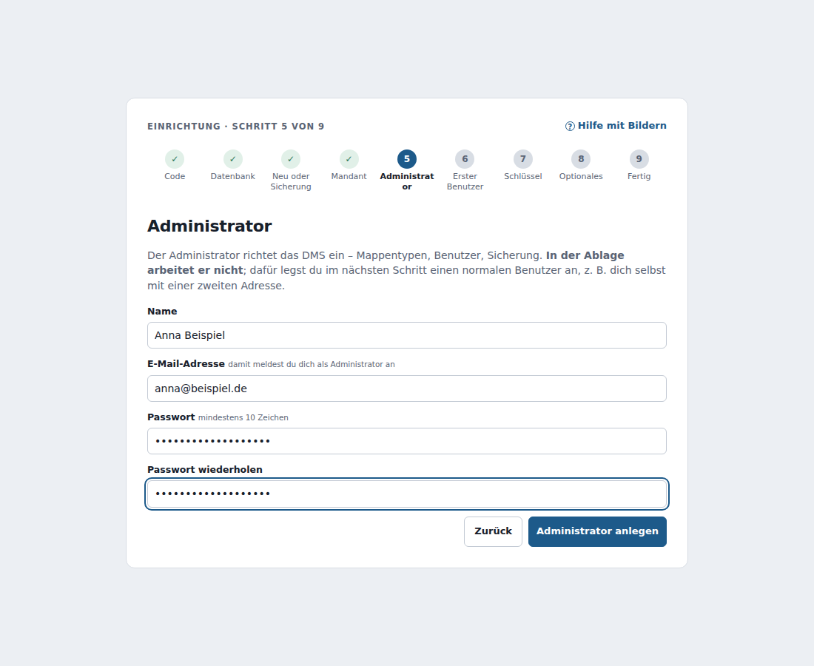
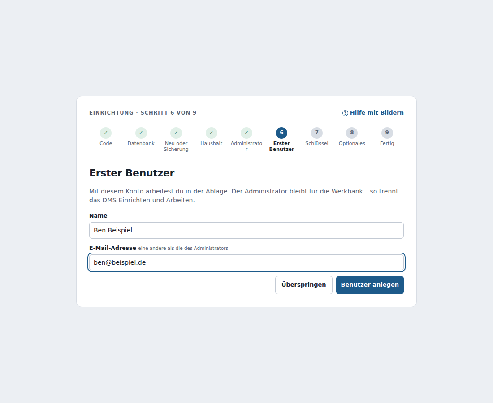
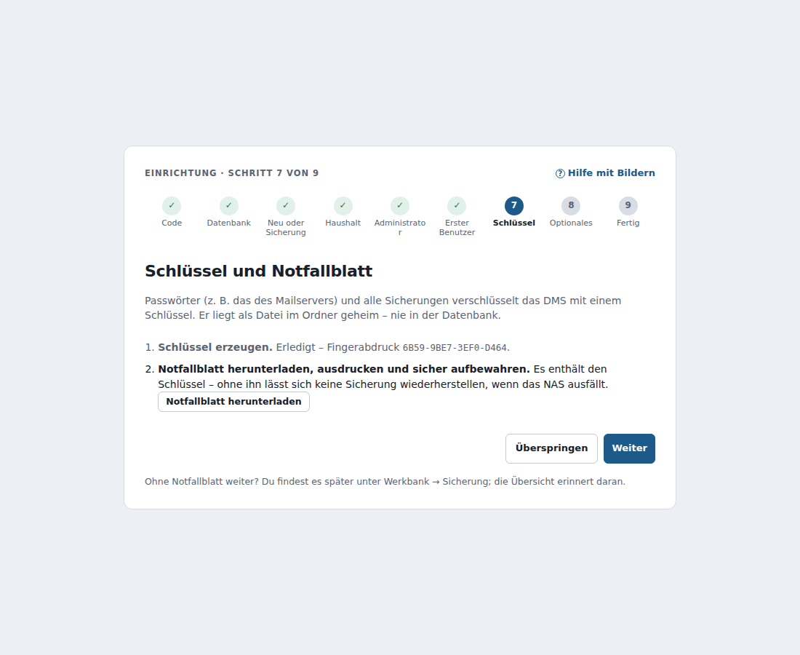
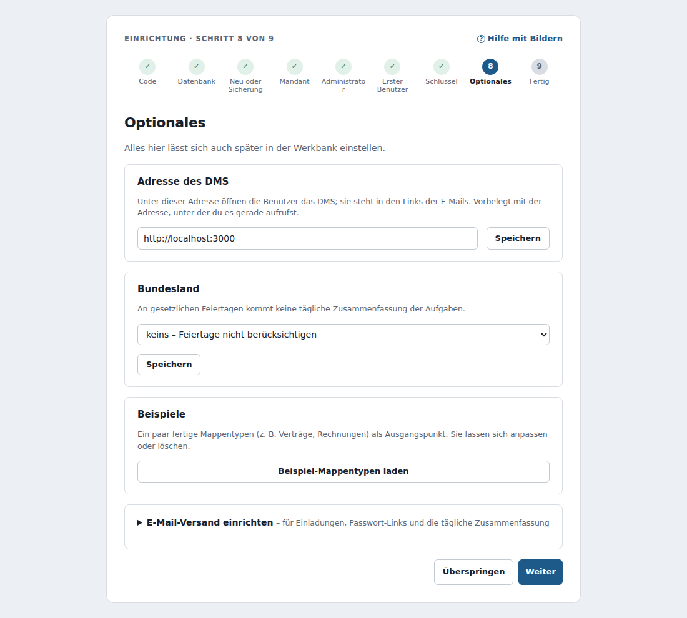
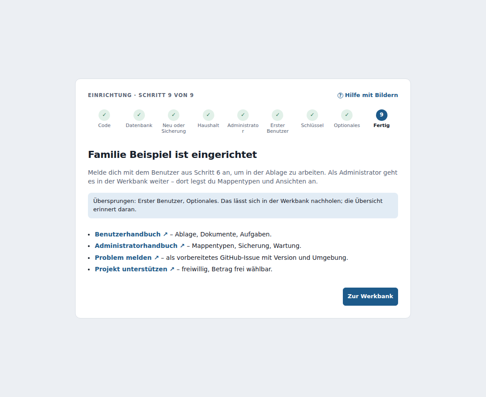
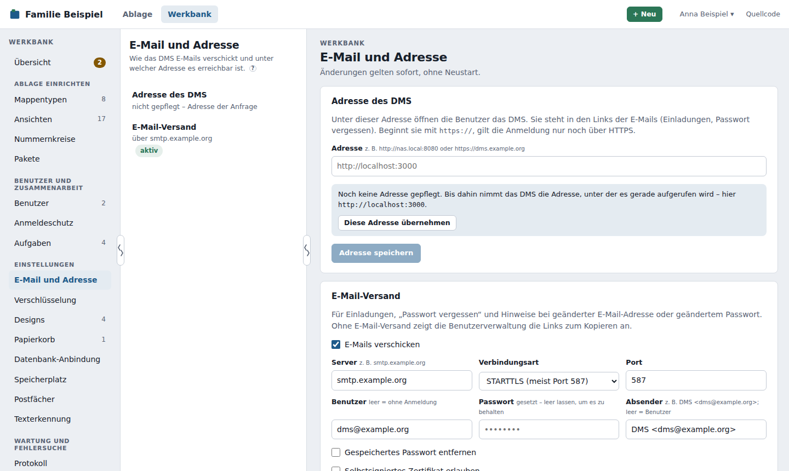

Einrichtung und Betrieb¶
Wie du das DMS installierst – auf Synology, UGREEN, QNAP, TrueNAS, Unraid, umbrelOS, ZimaOS, CasaOS oder jedem Server mit Docker –, steht im eigenen Bereich Wie komme ich an ein DMS?. Diese Seite beschreibt, was danach kommt: den Einrichtungsassistenten, die Anbindung an die Datenbank, Ordner, Einstellungen und den Betrieb hinter einem Reverse-Proxy.
Einen Bereich nicht in der Leiste gefunden?
Manche Bereiche der Werkbank, zum Beispiel Wartungsmodus, Datenbank-Anbindung oder Wartungsoperationen, sind in der Vorlage Haushalt ausgeblendet. Unten in der Leiste steht, wie viele Bereiche ausgeblendet sind; ein Klick zeigt sie. Dauerhaft einblenden kannst du sie unter Werkbank anpassen. Ausgeblendet heißt nicht abgeschaltet.
Das DMS läuft – empfohlen – als zwei Container: die Anwendung (ghcr.io/motom001/dms) und PostgreSQL (postgres:17). Alternativ gibt es ghcr.io/motom001/dms-komplett, in dem beides in einem Container läuft (Gegenüberstellung unter Ein oder zwei Container?). Bei jedem Push auf main baut GitHub Actions beide Images neu (Tag main, zusätzlich je Commit ein Kurz-Hash und je Release die Versionsnummer).
Erst einrichten, dann freigeben
Mach das DMS erst über einen Reverse-Proxy oder Port-Freigabe erreichbar, wenn die Einrichtung abgeschlossen ist. Der Einrichtungscode schützt zwar davor, dass ein Fremder sie übernimmt – sicherer ist es trotzdem.
Der Einrichtungsassistent¶
Beim ersten Aufruf führt ein Assistent in neun Schritten durch die Einrichtung. Jeder Schritt hat oben ein ?, das genau den passenden Abschnitt hier öffnet. Übersprungenes lässt sich in der Werkbank nachholen; die Übersicht erinnert daran.
Einrichtungscode¶

Damit niemand sonst im Netz das DMS einrichtet, fragt es zuerst nach einem Code wie K7PX-3MNA-Q9TR. Er steht an zwei Stellen:
- im Protokoll des Containers – in der Docker-Oberfläche des NAS den Container
appdes Projekts öffnen und das Protokoll ansehen (bei UGREEN Docker → Container → dms-app → Protokoll, bei Synology Container Manager → Container → Details → Protokoll) oderdocker compose logs app(bei dms-komplett:docker compose logs dms). Gesucht ist die ZeileEinrichtungscode für das DMS: XXXX-XXXX-XXXX; - in der Datei
EINRICHTUNGSCODEim Ordnergeheim(in der Vorlage/volume1/docker/dms/geheim).
Wo genau das bei deinem Gerät ist, zeigt die Anleitung deiner Plattform unter Wie komme ich an ein DMS? – für Synology, UGREEN, QNAP, Unraid, TrueNAS, umbrelOS, ZimaOS, CasaOS und andere.
Nach dem Anlegen des Administrators ist der Code wertlos; das DMS löscht die Datei. Nach zehn falschen Versuchen sperrt es die Eingabe für zehn Minuten.
Datenbank¶

Server (in der Vorlage db), Port 5432, Datenbank und Benutzer dms und das Passwort aus der .env. Verbindung prüfen meldet verständlich, was nicht stimmt – Server nicht erreichbar, Passwort falsch, Datenbank fehlt (mit Knopf zum Anlegen, wenn der Benutzer das darf). Übernehmen und weiter speichert die Anbindung und startet das DMS – ohne Neustart des Containers; die Tabellen legt es selbst an. Der Schritt entfällt, wenn eine Anbindung schon funktioniert (siehe Datenbank-Anbindung).
Neu einrichten oder wiederherstellen¶

Bei einer leeren Datenbank fragt das DMS, ob du neu anfängst oder eine Sicherung zurückholst. Wiederherstellen führt in den Ablauf unter Wiederherstellen und endet bei der Anmeldung mit den bisherigen Zugangsdaten.
Haushalt¶

Der Name des DMS, meist der Name der Familie („Familie Mustermann“) oder der Firma. Er erscheint als Schriftzug in der Kopfzeile, im Browser-Tab und auf der Anmeldeseite (änderbar unter Werkbank → Designs).
Administrator¶

Name, E-Mail-Adresse und Passwort des Administrators. Danach bist du als Administrator angemeldet.
Erster Benutzer¶

Administratoren richten ein, arbeiten aber nicht in der Ablage. Lege deshalb einen normalen Benutzer an – zum Beispiel dich selbst mit einer zweiten Adresse. Ohne E-Mail-Versand zeigt der Assistent den Einladungslink zum Kopieren.
Schlüssel und Notfallblatt¶

Der Schlüssel verschlüsselt gespeicherte Passwörter und alle Sicherungen (siehe Verschlüsselung); das Notfallblatt enthält ihn zum Ausdrucken. Druck es aus und leg es zu deinen wichtigen Unterlagen – ohne Schlüssel lässt sich keine Sicherung zurückholen.
Optionales¶

Adresse des DMS (vorbelegt mit der Adresse im Browser), Bundesland für Feiertage, Beispiel-Mappentypen und der E-Mail-Versand. Alles lässt sich auch später in der Werkbank einstellen.
Fertig¶

Mit Links zu beiden Handbüchern, „Problem melden“ als vorbereitetes GitHub-Issue und dem Hinweis auf GitHub Sponsors.
Danach: unter Werkbank → Sicherung den Zeitplan einschalten, eigene Mappentypen anlegen und weitere Benutzer einladen.
Datenbank-Anbindung¶
Die Anbindung an PostgreSQL steht in der Datei datenbank.json im Ordner /data/geheim (nur für den Container lesbar, mit Passwort). Sie ist führend:
- Gibt es die Datei, nimmt das DMS sie – auch wenn in der Compose-Datei
DATABASE_URLgesetzt ist. Weicht die Variable ab, weist die Werkbank-Übersicht darauf hin; sie wird ignoriert und kann entfernt werden. - Gibt es sie nicht, aber
DATABASE_URL(bisherige Installationen), prüft das DMS die Variable beim Start und übernimmt sie in die Datei. Danach ist die Variable überflüssig. - Gibt es sie nicht, aber
DMS_DB_PASSWORT(Vorlagen für Synology, UGREEN, QNAP, TrueNAS, Unraid), nimmt das DMS die Standard-Anbindung – Serverdb(oderDMS_DB_HOST), Port 5432, Datenbank und Benutzerdms– mit diesem Passwort und übernimmt sie ebenso. Das Passwort steht so nur einmal in der Compose-Datei, ohne Sonderzeichen für eine URL maskieren zu müssen. - Gibt es beides nicht – oder klappt die Verbindung nicht –, startet das DMS im Einrichtungsmodus: Es liefert nur den Assistenten aus und fragt die Anbindung ab (mit Einrichtungscode). Alle anderen Schnittstellen antworten bis dahin mit 503. Eine gespeicherte Anbindung, deren Datenbank nur noch nicht erreichbar ist (der Datenbank-Container startet noch), versucht es alle zehn Sekunden weiter.
Unter Werkbank → Datenbank-Anbindung siehst und änderst du die Anbindung: erst Verbindung prüfen, dann Übernehmen. Die neue Anbindung gilt nach einem Neustart (Jetzt neu starten – im Container startet Docker das DMS gleich wieder). Die Daten wandern dabei nicht mit; für einen Umzug in eine andere Datenbank nimm eine Sicherung.
In der Datei steht auch die interne Id des Haushalts (früher die Umgebungsvariable HAUSHALT_ID). Bisherige Installationen übernehmen sie beim ersten Start; die Variable kann danach entfernt werden.
E-Mail und Adresse¶
Unter Werkbank → E-Mail und Adresse stellst du ein, was früher Umgebungsvariablen waren. Änderungen gelten sofort, ohne Neustart.

- Adresse des DMS – unter dieser Adresse öffnen die Benutzer das DMS, z. B.
http://nas.local:8080oderhttps://dms.example.org. Sie steht in den Links der E-Mails. Solange keine gepflegt ist, nimmt das DMS die Adresse, unter der es gerade aufgerufen wird; Diese Adresse übernehmen speichert sie. Beginnt sie mithttps://, gilt die Anmeldung nur noch über HTTPS. - E-Mail-Versand – Server, Verbindungsart (STARTTLS, meist Port 587; SSL/TLS, meist 465; unverschlüsselt nur im Heimnetz), Benutzer, Passwort und Absender. Verbindung prüfen meldet sich am Server an, ohne etwas zu senden; Testmail senden schickt eine Mail an eine Adresse deiner Wahl – beides mit den Werten im Formular, auch bevor du speicherst. Schlägt etwas fehl, steht die Meldung des Mailservers darunter.
- Selbstsigniertes Zertifikat erlauben – nur für einen eigenen Mailserver im Heimnetz.
- Der Absender ist auch der Absender, wenn Benutzer eine Mappe per E-Mail versenden. Das DMS trägt dabei die Adresse des Benutzers als Antworten an ein – so kommen Antworten bei ihm an, ohne dass das DMS fremde Absender vortäuscht (das würden viele Empfänger als Spam einstufen). Dieselbe Einstellung braucht die tägliche Zusammenfassung der Aufgaben.
- Ohne E-Mail-Versand (Haken „E-Mails verschicken“ aus) zeigt die Benutzerverwaltung die Einladungs- und Passwort-Links zum Kopieren an; „Passwort vergessen“ setzt dann der Administrator zurück.
Passwort verschlüsselt
Das SMTP-Passwort speichert das DMS verschlüsselt; den Schlüssel dazu erzeugst du einmal unter Werkbank → Verschlüsselung. Solange es keinen gibt, lässt sich kein Passwort speichern. Das Passwort wird nie an die Oberfläche zurückgegeben. Nimm trotzdem am besten ein eigenes Passwort nur für den Versand, etwa ein App-Passwort deines Mailanbieters.
Von einer älteren Version
Bis Version 0.8 waren das die Umgebungsvariablen APP_URL und SMTP_*. Beim ersten Start von 0.9 übernimmt das DMS ihre Werte einmalig in die Werkbank; danach werden sie ignoriert, und das Protokoll weist darauf hin, dass sie aus der Compose-Datei entfernt werden können.
Ordner und Volumes¶
Die Ordner im Container sind fest. Wohin sie auf dem NAS zeigen, bestimmst du allein über die Volumes der Compose-Datei – dafür gibt es keine Umgebungsvariablen.
| Ordner im Container | Inhalt | Volume in der Vorlage |
|---|---|---|
/data/files |
hochgeladene Dokumente, Logos, Bilder gemeldeter Fehler | /volume1/docker/dms/files |
/data/geheim |
Schlüssel für gespeicherte Passwörter (dms.schluessel), Datenbank-Anbindung (datenbank.json), Einrichtungscode (EINRICHTUNGSCODE, nur bis zur Einrichtung), RESCUE-Datei |
/volume1/docker/dms/geheim |
/data/sicherung |
Sicherungen, verschlüsselt | /volume1/docker/dms/sicherung |
/eingang (optional) |
Eingangsordner für Scanner und NAS | /volume1/docker/dms/eingang |
Jeder der drei Ordner unter /data muss ein eigenes Volume sein; sonst ist sein Inhalt weg, sobald der Container neu erstellt wird (z. B. beim Update). Die Datenbank liegt im Volume des PostgreSQL-Containers – beim Image dms-komplett im vierten Ordner /data/postgres. Wie viel Platz in jedem Ordner frei ist, zeigen Werkbank → Speicherplatz und Werkbank → Technik.
volumes:
- /volume1/docker/dms/files:/data/files
- /volume1/docker/dms/geheim:/data/geheim
- /volume1/docker/dms/sicherung:/data/sicherung
Von einer älteren Version (bis 0.22)
Früher legten FILES_DIR, DMS_SCHLUESSEL_DATEI und DMS_SICHERUNG_DIR die Ordner fest. Steht eine davon noch mit dem festen Wert in der Compose-Datei (z. B. FILES_DIR: /data/files), läuft alles weiter; das Protokoll und die Werkbank-Übersicht weisen darauf hin, dass du sie entfernen kannst. Zeigt sie auf einen anderen Ordner, startet das DMS nicht – sonst sähe es plötzlich einen leeren Dateiordner. Die Meldung im Protokoll des Containers nennt dann, welches Volume stattdessen auf den festen Ordner zeigen muss. Siehe Aktualisieren.
Einstellungen¶
Diese Einstellungen sind Umgebungsvariablen im Compose-Projekt:
| Variable | Bedeutung |
|---|---|
DATABASE_URL |
Nur noch für den Umstieg: wird beim ersten Start in die Datenbank-Anbindung übernommen und danach ignoriert |
DMS_DB_PASSWORT, DMS_DB_HOST, DMS_DB_PORT |
Statt DATABASE_URL: Passwort (sowie Server, Standard db, und Port, Standard 5432) der Standard-Anbindung; ebenfalls nur für den ersten Start |
DMS_EINRICHTUNGSCODE |
aus: Einrichtungsassistent ohne Code – für App-Stores, in denen das Container-Protokoll nicht ohne Kommandozeile lesbar ist. Bis der Administrator angelegt ist, kann dann jeder im Netz die Einrichtung übernehmen |
TRUST_PROXY |
Wem das DMS die Angaben eines Reverse-Proxys glaubt. Nicht gesetzt oder auto: dem eigenen Rechner und privaten Netzen – passt fast immer. false: niemandem, true: allen, oder eine Liste wie 172.18.0.0/16. Siehe Hinter einem Reverse-Proxy |
DMS_EINBETTEN |
Seiten, die das DMS einbetten dürfen (z. B. ein Dashboard), etwa https://ha.example.org http://nas:8123. Nicht gesetzt: nur das DMS selbst. Siehe Sicherheits-Header |
LOG_LEVEL |
Grundstufe des Protokolls: debug, info (Standard), warn, error |
PORT, HOST |
Port (Standard 3000) und Adresse (Standard 0.0.0.0, alle), auf denen das DMS im Container lauscht. Normalerweise änderst du nicht PORT, sondern den Port nach außen in der Compose-Datei (in der Vorlage 8080:3000, z. B. 8090:3000). Die eingebaute Gesundheitsprüfung des Images folgt PORT; setzt du HOST auf eine einzelne Adresse, muss sie 127.0.0.1 mit einschließen, sonst gilt der Container als unhealthy |
DMS_EINGANG |
Nur für Sonderfälle: anderer Ort des Eingangsordners im Container (Standard /eingang). Üblich ist, den Ordner des NAS auf /eingang einzubinden |
Hinter einem Reverse-Proxy¶
Läuft das DMS hinter einem Reverse-Proxy (Nginx Proxy Manager, nginx, Caddy, Traefik, der Proxy deines NAS …), ist nur eines zu tun: In der Werkbank unter E-Mail und Adresse die öffentliche Adresse eintragen, z. B. https://dms.example.org. Beginnt sie mit https://, setzt das DMS das Sitzungs-Cookie nur noch über HTTPS, und Links in E-Mails führen auf diese Adresse.
HTTPS und Zertifikate¶
Das DMS spricht selbst nur HTTP und verwaltet keine Zertifikate. Das übernimmt der Reverse-Proxy: Er nimmt die HTTPS-Verbindung an, kümmert sich um das Zertifikat und dessen Erneuerung und reicht die Anfrage an das DMS weiter. Übliche Wege:
- Nginx Proxy Manager als zusätzlicher Container: Zertifikat von Let's Encrypt per Mausklick. So läuft es beim Entwickler, siehe Beispielaufbau.
- Der Proxy deines NAS: Synology, UGREEN und QNAP bringen einen Reverse-Proxy samt Let's-Encrypt-Zertifikaten mit.
- Caddy: holt und erneuert Zertifikate von selbst, die Konfiguration ist wenige Zeilen lang.
Für Let's Encrypt braucht es eine eigene Domain, die auf deinen Anschluss zeigt. Soll das DMS nur zu Hause erreichbar sein, reicht HTTP im Heimnetz.
Was der Proxy dem DMS mitteilt¶
Der Proxy leitet jede Anfrage an das DMS weiter. Für das DMS sieht sie deshalb so aus, als käme sie vom Proxy. Was das Gerät dahinter ist, schreibt der Proxy in Zusatzangaben (X-Forwarded-For, X-Forwarded-Proto). Das DMS braucht sie für:
| Wofür | Mit den Angaben des Proxys | Ohne sie |
|---|---|---|
| IP-Adressen im Protokoll und bei den Sitzungen eines Benutzers | die Adresse des Handys oder Laptops | immer die Adresse des Proxys |
| Sperre nach falschen Passwörtern (Anmeldeschutz, je E-Mail-Adresse und IP sowie je IP) | trifft nur das Gerät, von dem die Fehlversuche kamen | trifft alle Geräte: Fehlversuche von außen sperren die Anmeldung auch zu Hause |
| HTTPS erkennen, solange keine Adresse gepflegt ist | Cookie nur über HTTPS, Links mit https:// |
Cookie auch über HTTP, Links mit der internen http://-Adresse |
Seit Version 0.43.0 nimmt das DMS diese Angaben von selbst an, wenn der Proxy im eigenen Rechner oder in einem privaten Netz sitzt (127.0.0.1, 10.x.x.x, 172.16–31.x.x, 192.168.x.x und die entsprechenden IPv6-Netze). Das trifft auf einen Proxy-Container neben dem DMS und auf den Proxy eines NAS praktisch immer zu. Anfragen direkt aus dem Internet können so keine fremde IP und kein HTTPS vortäuschen. Unter Wartung und Fehlersuche → Technik steht bei TRUST_PROXY, was gerade gilt.
Wann TRUST_PROXY doch setzen?
TRUST_PROXY: "false": Wenn du ganz ausschließen willst, dass ein Gerät in deinem Heimnetz, das das DMS direkt über Port 8080 erreicht, eine andere IP-Adresse vortäuscht. Die IP-Adressen und die Sperre verhalten sich dann wie in der rechten Spalte oben.- Eine Liste, z. B.
TRUST_PROXY: "172.18.0.5": Nur genau diesem Proxy glauben. TRUST_PROXY: "true": Wenn der Proxy eine öffentliche Adresse hat, etwa ein Tunnel- oder Cloud-Dienst, der direkt ans DMS weiterleitet. Dann darf das DMS selbst nicht aus dem Internet erreichbar sein.
Vor Version 0.43.0 war false der Standard. Wer TRUST_PROXY: "true" schon gesetzt hat, kann es stehen lassen oder entfernen.
Die Adresse trotzdem pflegen
Die Adresse in der Werkbank ist verlässlicher als jede Erkennung: E-Mails aus dem Hintergrund (Erinnerungen, Zusammenfassung) haben keine Anfrage, aus der das DMS die Adresse ablesen könnte.
Sicherheits-Header¶
Das DMS setzt die üblichen Sicherheits-Header selbst – dein Reverse-Proxy muss sie nicht noch einmal setzen (doppelte Header schaden nicht, verwirren aber bei der Fehlersuche):
X-Frame-Options: SAMEORIGINundContent-Security-Policy: frame-ancestors 'self'– keine fremde Seite kann das DMS unsichtbar einbetten,- eine strenge
Content-Security-Policyfür die Oberfläche (nur eigene Skripte), X-Content-Type-Options: nosniff,Referrer-Policy: same-origin,Permissions-Policy,Strict-Transport-Security, sobald das DMS über HTTPS aufgerufen wird.
Soll das DMS in einer anderen Seite erscheinen, etwa in einem Home-Assistant-Dashboard, trage deren Ursprung in DMS_EINBETTEN ein (mehrere durch Leerzeichen getrennt). Ungültige Angaben ignoriert das DMS und nennt sie im Protokoll.
Ein Beispiel für nginx:
server {
listen 443 ssl;
server_name dms.example.org;
# ssl_certificate …; ssl_certificate_key …;
client_max_body_size 110m; # Dokumente bis 100 MB
location / {
proxy_pass http://<NAS>:8080;
proxy_set_header Host $host;
proxy_set_header X-Forwarded-For $proxy_add_x_forwarded_for;
proxy_set_header X-Forwarded-Proto $scheme;
proxy_read_timeout 120s;
}
}
Lange Arbeiten wie das Erzeugen tausender Demo-Mappen laufen im Hintergrund, damit der Proxy nicht wegen einer Zeitüberschreitung abbricht. Die Live-Anzeige des Protokolls fragt alle zwei Sekunden nach und braucht keine besondere Proxy-Einstellung.